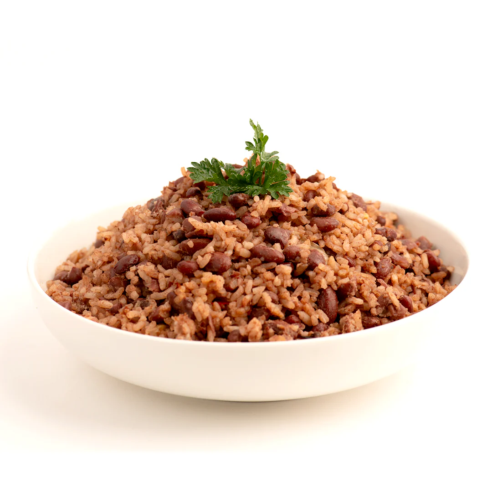

Gallopinto

Descripcion
El Gallo pinto nicaragüense es una delicia tradicional que combina arroz, frijoles, aceite y condimentos.
Su preparación sencilla y deliciosa refleja la esencia culinaria de Nicaragua.
Ingredientes
- ½ libra de Frijolitos
- 1 libra de Arroz blanco
- 1 Chiltoma
- 1 Cabeza de ajo
- 1 Cebolla blanca
- 1 pizca de Sal
- Aceite
- Agua
Pasos
- En una paila caliente, se debe freír la cebolla hasta que esté dorada.
- Luego se agrega el ajo picado y la chiltoma cortada en trozos pequeños, cocinando por unos minutos.
- Seguidamente, se incorporan los frijoles previamente cocidos y escurridos, mezclando bien.
- Posteriormente, se añade el arroz lavado y se cocina por unos minutos más.
- Luego se agrega agua suficiente para cubrir el arroz y se sazona con sal.
- Se cocina a fuego medio hasta que el arroz esté listo y el agua se haya absorbido por completo.
- De esta forma, se podrá disfrutar de un delicioso Gallo Pinto nicaragüense.
Home